Quadrature schemes#
Objectives
This code snippet shows the location of the quadrature points for different degrees, cell types and quadrature rules both in 2D and 3D.
Download sources
2D Quadrature rule#
import matplotlib.pyplot as plt
import numpy as np
import basix
from basix import CellType, QuadratureType
all_cell_types = [CellType.triangle, CellType.quadrilateral]
degrees = range(5)
quad_rules = {
QuadratureType.default: (degrees, all_cell_types),
QuadratureType.gauss_jacobi: (degrees, all_cell_types),
QuadratureType.gll: (degrees, [CellType.quadrilateral]),
QuadratureType.xiao_gimbutas: (degrees[1:], [CellType.triangle]),
}
Default quadrature rule#
plot_quadrature_rule_2D(QuadratureType.default, color="C3")
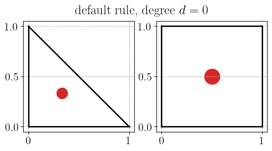
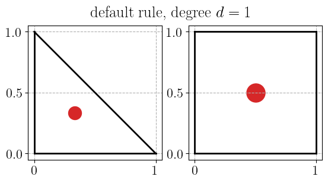
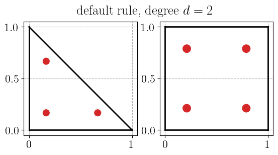
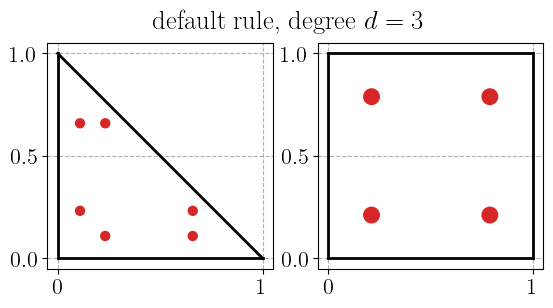
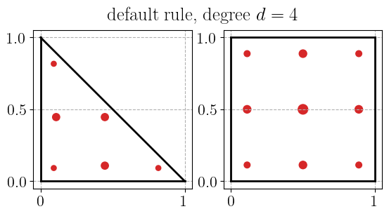
Gauss-Jacobi quadrature rule#
plot_quadrature_rule_2D(QuadratureType.gauss_jacobi, color="C2")
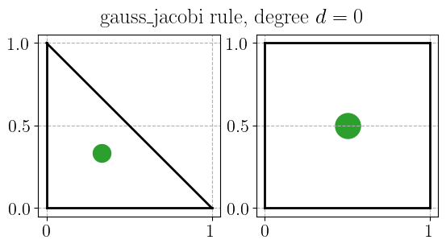
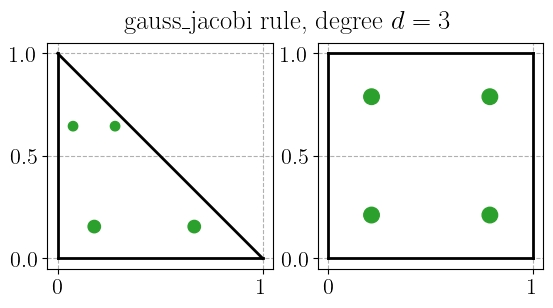
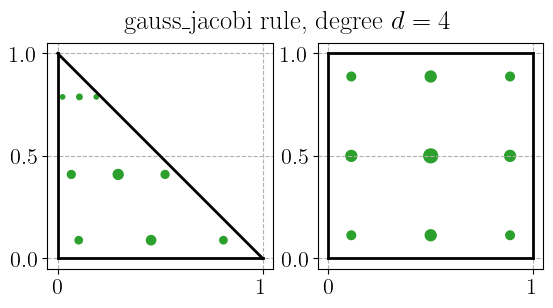
Gauss-Legendre-Lobatto quadrature rule#
plot_quadrature_rule_2D(QuadratureType.gll, color="C1")
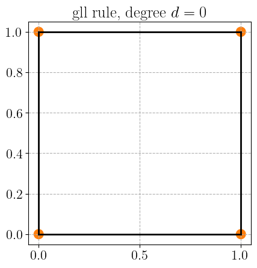
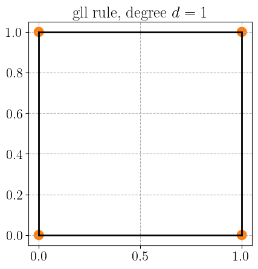
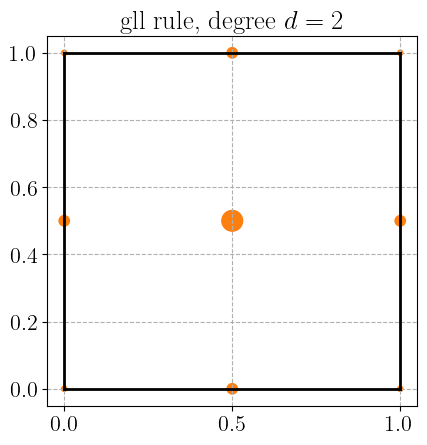
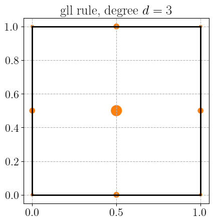
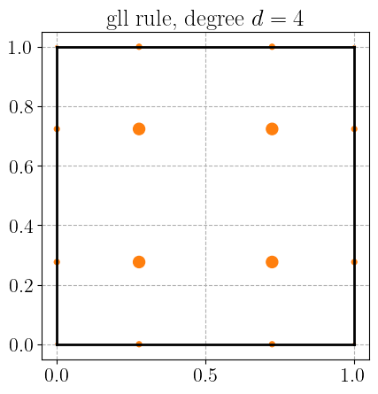
Xiao-Gimbutas quadrature rule#
plot_quadrature_rule_2D(QuadratureType.xiao_gimbutas, color="C0")
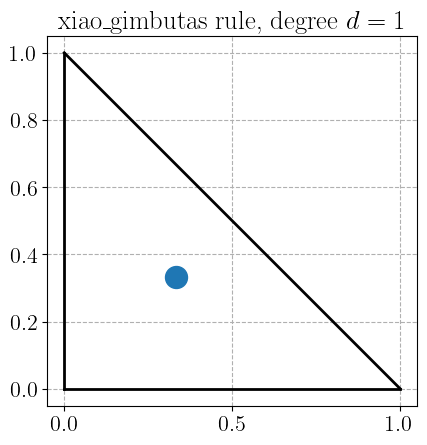
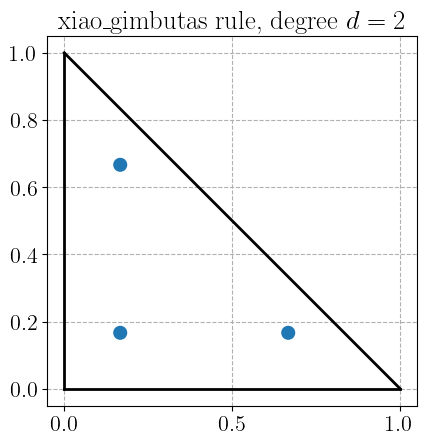
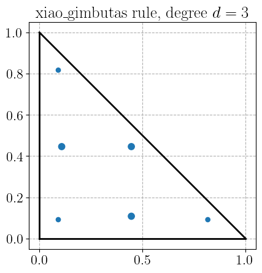
3D rules#
cell_type = CellType.hexahedron
dim = 3
deg = 2
from dolfinx import cpp, mesh
import pyvista as pv
from matplotlib.colors import to_hex
pv.set_jupyter_backend("static")
all_cell_types = [CellType.tetrahedron, CellType.hexahedron]
degrees = range(5)
quad_rules = {
QuadratureType.default: (degrees, all_cell_types),
QuadratureType.gauss_jacobi: (degrees, all_cell_types),
QuadratureType.gll: (degrees, [CellType.hexahedron]),
QuadratureType.xiao_gimbutas: (degrees[1:], [CellType.tetrahedron]),
}
Default quadrature rule#
plot_quadrature_rule_3D(QuadratureType.default, "C3")
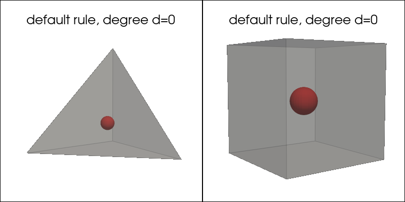
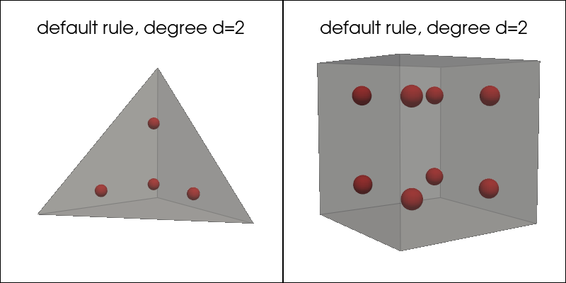
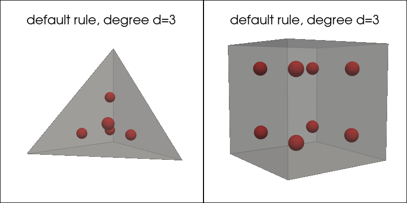
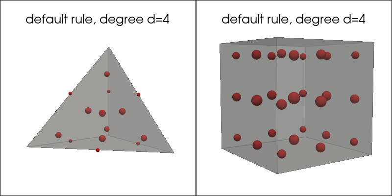
Gauss-Jacobi quadrature rule#
plot_quadrature_rule_3D(QuadratureType.gauss_jacobi, "C2")
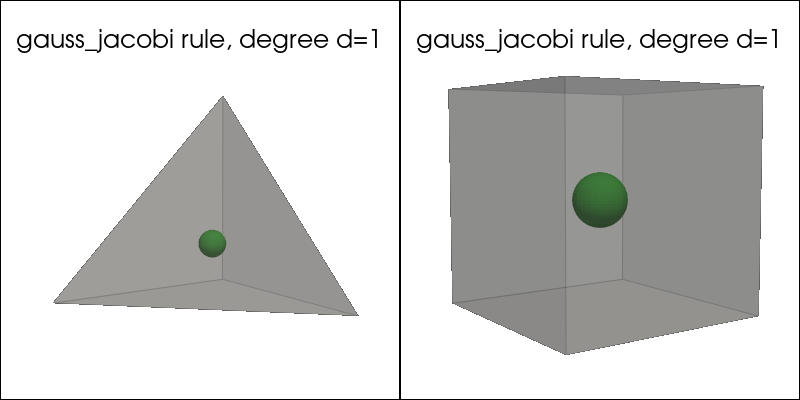
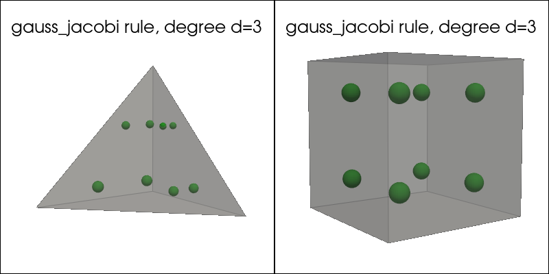
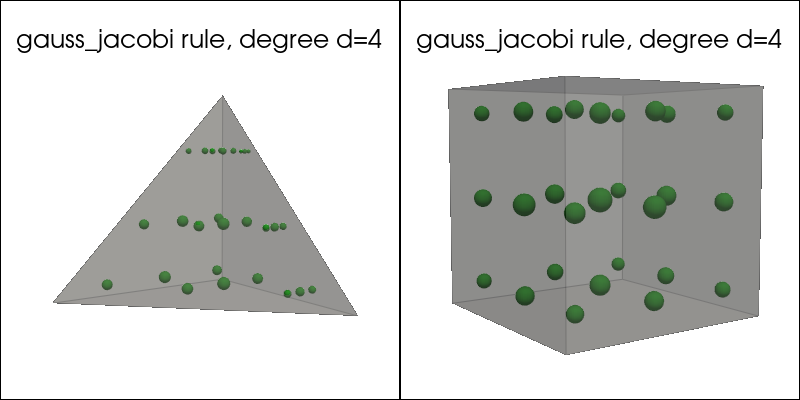
Gauss-Legendre-Lobatto quadrature rule#
plot_quadrature_rule_3D(QuadratureType.gll, "C1")
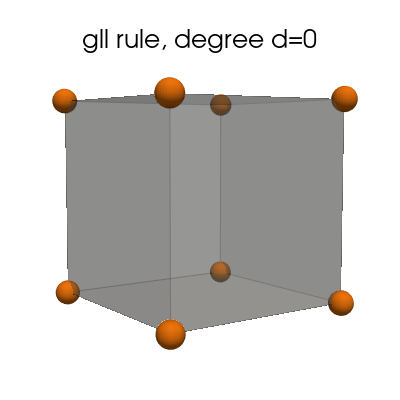
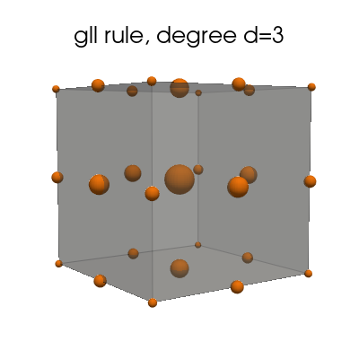
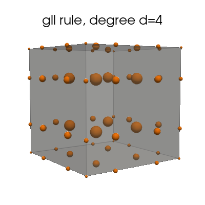
Xiao-Gimbutas quadrature rule#
plot_quadrature_rule_3D(QuadratureType.xiao_gimbutas, "C0")
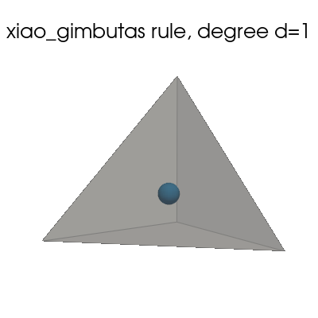
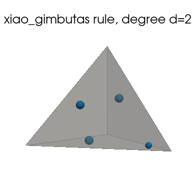
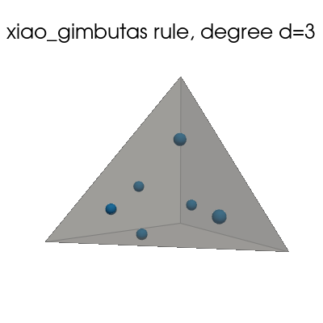
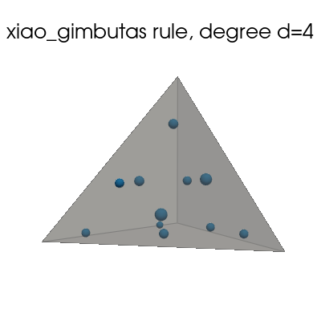